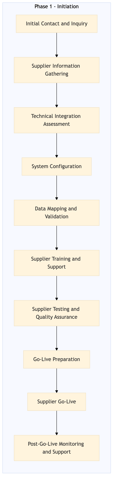

This process document outlines the onboarding of activities and experiences suppliers for Viator and GetYourGuide, ensuring seamless integration with OTA and TMC systems.
| Trigger | A new supplier expresses interest in partnering with Expedia Group or Amex GBT / SAP Concur for activities and experiences. |
| Outcome | The supplier is successfully onboarded, integrated into the relevant systems, and ready to provide services through Expedia Open World, Partner Central, and other designated platforms. |
| Systems | Expedia Open World Partner Central Amadeus NDC Sabre GDS Travelport EVC One Key TravelAds AWS SageMaker Snowflake Kafka Salesforce Tableau |

Click to enlarge
| Step | Name & Pain Point | Role | System | Input | Output | KPI | Flags |
|---|---|---|---|---|---|---|---|
| 1.1 | Initial Contact and Inquiry Handling multiple inquiries efficiently | Supplier Relationship Manager (SRM) | Email/Phone | Supplier inquiry | Confirmation of interest | Response time within 24 hours | ⚠ Exception |
| 1.2 | Supplier Information Gathering Ensuring accurate and complete information | SRM | Partner Central | Supplier details | Completed supplier profile | Profile completion within 7 days | ⚠ Exception |
| 1.3 | Technical Integration Assessment Complex API integrations | IT Specialist | AWS SageMaker, Snowflake | Supplier API documentation | Integration feasibility report | Report completion within 5 days | ◆ Decision |
| 1.4 | System Configuration Customizing systems for specific supplier needs | IT Specialist | Expedia Open World, Amadeus NDC, Sabre GDS, Travelport, EVC, One Key, TravelAds | Integration feasibility report | Configured system settings | System configuration within 10 days | ⚠ Exception |
| 1.5 | Data Mapping and Validation Handling large volumes of data | IT Specialist | Kafka, Salesforce, Tableau | Supplier data | Validated data mappings | Validation completion within 7 days | ◆ Decision |
| 1.6 | Supplier Training and Support Providing comprehensive training | SRM, IT Specialist | Email/Phone, Webinars | Onboarding materials | Trained supplier staff | Training completion within 3 days | ⚠ Exception |
| 1.7 | Supplier Testing and Quality Assurance Identifying and resolving integration issues | QA Engineer | Expedia Open World, Partner Central | Test scenarios | Passed quality assurance tests | Testing completion within 5 days | ◆ Decision |
| 1.8 | Go-Live Preparation Ensuring smooth transition | SRM, IT Specialist | All relevant systems | Final system checks | Prepared for go-live | Go-live readiness within 2 days | ⚠ Exception |
| 1.9 | Supplier Go-Live Managing post-go-live support | SRM, IT Specialist | All relevant systems | Go-live signal | Live supplier services | No critical issues within 24 hours of go-live | ◆ Decision |
| 1.10 | Post-Go-Live Monitoring and Support Continuous monitoring and support | SRM, IT Specialist | All relevant systems | Monitoring tools | Resolved issues and performance metrics | Issue resolution within 48 hours | ⚠ Exception |